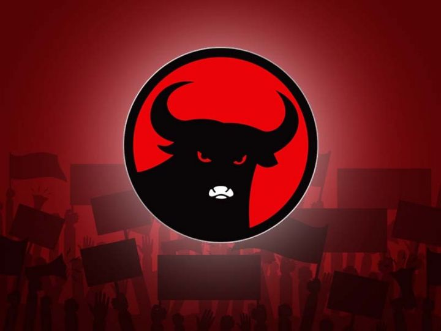
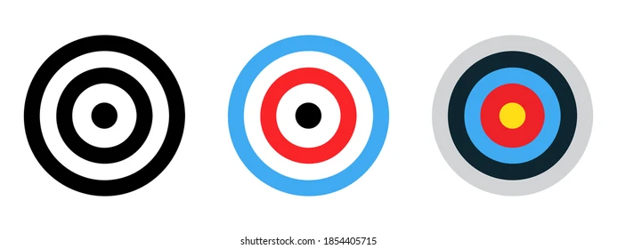
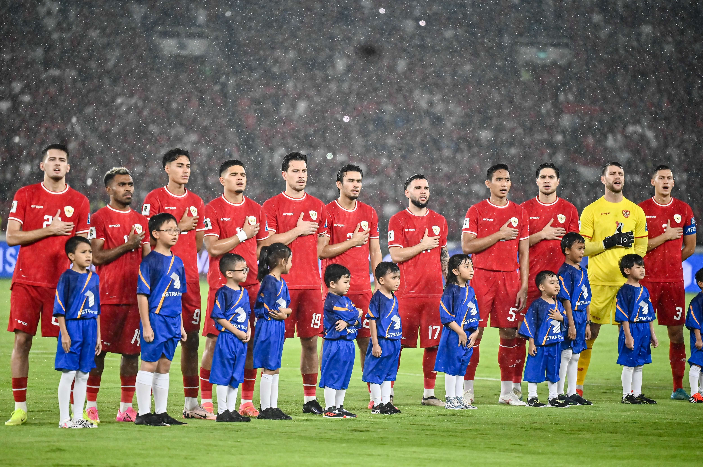

7 Portal Berita Online Terbaik di Indonesia
Dulu untuk menerima sebuah info terutama berita kita perlu membeli sebuah media cetak seperti koran atau majalah. Tetapi seiring perkembangan teknologi kita bisa dengan mudah mengaksesnya via website / situs. Pertama kali situs berita online di Indonesia sejak tahun 90-an, situs portal berita menjadi bagian yang berjalan beriringan dengan majunya teknologi internet.
Tiap harinya kita selalu disuguhkan beraneka ragam pemberitaan dan berita bermacam-macam. Ada berita politik, ekonomi, olahraga, sosial bahkan sampai public figure seperti artis. Membaca berita tentu membuat kita tidak ketinggalan informasi terupdate dan bisa memperkaya wawasan.
Sekarang tampilan bermacam situs portal berita Indonesia sudah benar-benar menarik dan nyaman untuk diperhatikan. Dengan ditambah artikel menarik, tentu membikin pembaca tertarik dan memberikan info yang membangun. Tiap-tiap orang saat ini dapat mengakses internet dengan gampang dimana saja mereka berada.
Berikut 7 portal berita online terbaik di Indonesia :
1. Tribunnews.com
Tribunnews merupakan situs berita online di Indonesia yang mempunyai slogan “berita terkini indonesia”. Situs ini menyampaikan berita terupdate lokal, nasional, internasional, ekonomi, olahraga serta seleb. Pada tahun 2016, situs berita ini pernah dinobatkan sebagai website portal terbaik di Indonesia.
2. Detik.com
Didirikan pada tahun 1998, Detikcom bisa disebut sebagai pencetus perusahaan media online di Indonesia. Sesuai seperti nama nya, portal ini menawarkan berita baru tiap detik dan tentunya dan tentunya menjadi portal informatif cepat dan terkini di Indonesia.
3. Kompas.com
Dari media cetak yang sekarang dikenal dengan kompas tv beralih ke portal web berita dengan alamat website kompas.com. Kompas.com selalu membagikan informasi yang terkait dengan dunia ekonomi, olahraga, teknologi, dan masih banyak lagi.
4. Liputan6.com
Berawal dari acara televisi, Liputan6 beralih ke situs berita online. Situs yang menyajikan bermacam artikel terbaik tajam, aktual, dan terpercaya seputar peristiwa yang sedang marak terjadi seperti politik, olahraga, media sosial, kriminalitas, dan lain-lain.
5. Merdeka.com
Pada mulanya merdeka.com bukanlah bermula dari pengembangan media melainkan merdeka.com justru dibangun oleh perusahaan teknologi menguasai tentang bahasa pemrograman PHP & Apache/FreeBSD. Bergabung dan bersinergi dengan portal web kapanlagi.com, membikin merdeka menjadi salah satu portal berita terbaik dan demikian itu dikenali masyarakat.
6. Kapanlagi.com
KapanLagi.com adalah Portal Berita Online di Indonesia yang berfokus pada berita dunia hiburan. Memperkenalkan bermacam berita yang terkait dengan musik dan dangdut tanah air.
7. Okezone.com
Berdiri sejak tahun 2007, Okezone adalah portal berita dan hiburan yang terbaik dan terpercaya yang berpusat pada pembaca Indonesia baik dalam negeri ataupun luarnegeri.
publikasi tentang media online

.jpeg) Cara Mengatasi Krisis Citra dengan Press Rilis yang Efektif
Cara Mengatasi Krisis Citra dengan Press Rilis yang Efektif
.jpeg) Cara Mengoptimalkan SEO pada Press Rilis untuk Caleg
Cara Mengoptimalkan SEO pada Press Rilis untuk Caleg
Target Pembaca yang Tepat dalam Press Rilis untuk Caleg
hott article
Perkiraan Susunan Pemain Timnas Indonesia Vs Arab Saudi
.jpeg) Klasemen Sementara jelang Timnas Indonesia Vs Arab Saudi
Klasemen Sementara jelang Timnas Indonesia Vs Arab Saudi